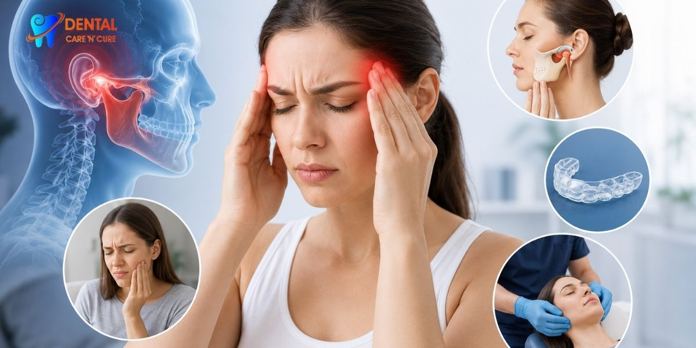

Our Location
Our Location
1st Floor, A3/15, Main Road, Paschim Vihar, New Delhi - 110063
 +91- 9310999214
+91- 9310999214
Call for free consultation

Why Do Teeth Wear Down? Causes, Symptoms & Prevention Explained
If you have ever looked in the mirror and thought your teeth look shorter than before, you are not imagining things. Many people searching for why do teeth wear down are actually noticing early signs of enamel loss or bite-related stress.
At Dental Care 'N' Cure, often recommended by the Best dentist in Delhi, we see patients who come in feeling tooth sensitivity, noticing worn-down teeth, or struggling with chewing discomfort without realizing the issue develops slowly over time.
Tooth wear is not just a cosmetic concern. It affects comfort, chewing ability, and long-term oral health. In some cases, patients also explore advanced options like dental Implant treatment when the tooth structure becomes severely compromised.
And no, teeth don’t shrink with age like sweaters in a hot wash, but the idea is not far off in terms of gradual wear.
Understanding Why Teeth Wear Down
To understand why teeth wear down, we need to look at three main processes:
- Dental attrition – wear from tooth-to-tooth contact
- Dental abrasion – wear from external friction, like brushing
- Dental erosion – chemical wear from acids
These processes slowly damage tooth enamel, the hard outer protective layer of teeth. Once enamel weakens, the underlying dentin hypersensitivity begins, leading to pain and sensitivity.
Patients often report experiencing sharp tooth pain, struggling with dental sensitivity issues, and noticing rough tooth edges, especially while eating or brushing.
Dental Care 'N' Cure, known among the best dentists in Delhi, focuses on identifying which type of wear is affecting the patient before planning treatment.
Common Causes of Tooth Wear
1. Teeth Grinding (Bruxism)
One of the biggest reasons for tooth wear is bruxism, also called grinding or clenching teeth.
- This often happens during sleep and leads to:
- Bruxism tooth damage
- Night grinding teeth damage
- Flat teeth appearance over time
It also increases the risk of temporomandibular joint disorder (TMJ) symptoms like jaw pain and headaches.
2. Acidic Food and Drinks
Frequent intake of acidic foods leads to acidic food enamel erosion, weakening the enamel structure.
- Over time, patients may notice:
- Sensitivity from enamel loss
- Pain while eating cold or hot food
- Increased enamel demineralization
This is one of the most common yet ignored causes of tooth wear.
4. Aging and Natural Wear
Yes, aging and tooth wear are linked. Over the years, normal chewing creates gradual occlusal wear. However, lifestyle choices can speed up the process significantly.
3. Hard Brushing Habits
Brushing too aggressively causes hard-brushing enamel wear and contributes to dental abrasion. Ironically, trying to “clean better” sometimes damages teeth more.
5. Bite Misalignment
A misaligned bite or bite misalignment causes uneven pressure on teeth, increasing wear in specific areas. Orthodontic treatment often helps correct this imbalance.
Symptoms You Should Not Ignore
Tooth wear develops slowly, so many patients only notice it when symptoms become uncomfortable.
Common signs include:
- Noticing teeth becoming shorter
- Feeling embarrassed about smile changes
- Experiencing discomfort with hot or cold food
- Feeling constant tooth sensitivity
- Frustration with tooth wear during eating
- Struggling with chewing discomfort
- Worried about long-term dental damage
In advanced cases, patients may also experience gum recession and tooth wear, increasing sensitivity further.
At Dental Care 'N' Cure, patients are often surprised that what they thought was “normal sensitivity” is actually progressive enamel loss.
How Tooth Wear Affects Oral Health
Tooth wear is not just about appearance. It impacts overall oral function.
When enamel reduces:
- Teeth become more sensitive
- Chewing becomes uncomfortable
- The risk of fractures increases
- Cosmetic appearance changes
In severe cases, patients may require restorative dentistry, including dental fillings, dental crowns, or cosmetic dentistry solutions.
Some advanced cases may even require evaluation for restorative dentistry procedures or implant-based solutions like Dental Implant treatment in Paschim Vihar.
Diagnosis at Dental Care 'N' Cure
As a trusted clinic often referred to as the Best dentist in Delhi, Dental Care 'N' Cure follows a structured diagnosis process:
We assess:
- Enamel thickness and wear pattern
- Signs of dental erosion and dental attrition
- Bite alignment and pressure distribution
- Presence of bruxism or jaw tension
- Sensitivity levels and dentin exposure
We also evaluate overall oral health care habits and preventive dentistry history. This helps us create a clear treatment roadmap.
Treatment Options for Worn-Down Teeth
Treatment depends on severity and cause:
Preventive Dental Care
- Fluoride treatment to strengthen enamel
- Dental sealants for protection
- Lifestyle and diet modifications
Restorative Treatment
- Dental fillings for minor wear
- Dental crowns for structural support
- Cosmetic dentistry for smile restoration
Advanced Cases
- Orthodontic treatment for bite correction
- TMJ-related therapy if jaw stress contributes
- Implant solutions when the tooth structure cannot be saved
Dental Care 'N' Cure focuses on preserving natural teeth whenever possible through preventive dentistry tips and early intervention.
How to Prevent Tooth Wear
Prevention is always easier than repair.
Simple habits include:
- Using a soft-bristled toothbrush
- Reducing acidic food intake
- Wearing night guards for bruxism
- Avoiding excessive clenching
- Regular dental checkups
We Assess
- Jaw movement patterns
- Bite alignment (dental occlusion)
- Muscle tenderness
- Joint sounds (clicking/popping)
- Signs of bruxism
These small changes help reduce tooth surface loss and protect enamel long-term. Many patients report improvement once they adjust their habits and follow structured guidance from professionals.
Why Choose Dental Care 'N' Cure?
Dental Care 'N' Cure focuses on long-term oral health, not just temporary fixes.
- Clear diagnosis of tooth wear causes
- Evidence-based restorative planning
- Focus on preventive dentistry first
- Personalized treatment approach
- Experience in managing complex wear cases
Whether you are dealing with sensitivity or advanced enamel loss, expert guidance makes a major difference.
When to Take Action for Worn-Down Teeth
When it comes to why teeth wear, it is often a combination of normal daily wear and tear, bite problems and just plain aging. Even things you do every day, such as grinding your teeth at night, eating too many foods that are high in acid or chewing incorrectly over the years, can cause the teeth to wear down gradually and without your knowledge. The key is this: early diagnosis matters! People are usually only alerted to a problem when they begin to notice sensitivity or visible changes, by this time, the wear has already occurred.
If you are experiencing some of these symptoms, such as wearing teeth, pain when eating, or simply not feeling comfortable about the changes in your smile, it's time to see the dentist as soon as you can. These indications are not likely to get themselves in place. Teeth aren’t supposed to feel shorter every year, and definitely not without a clear reason behind it. If any of this sounds familiar, you can reach out to Dental Care 'N' Cure . A simple check-up can help figure out what’s causing the wear and what can be done to stop it from getting worse before it turns into something more complicated.